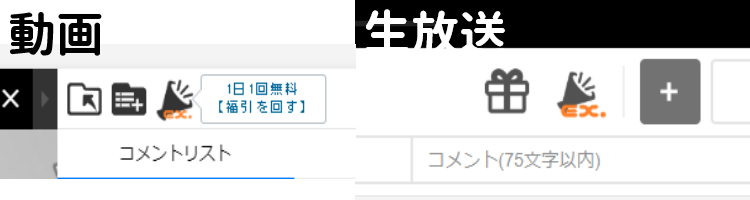
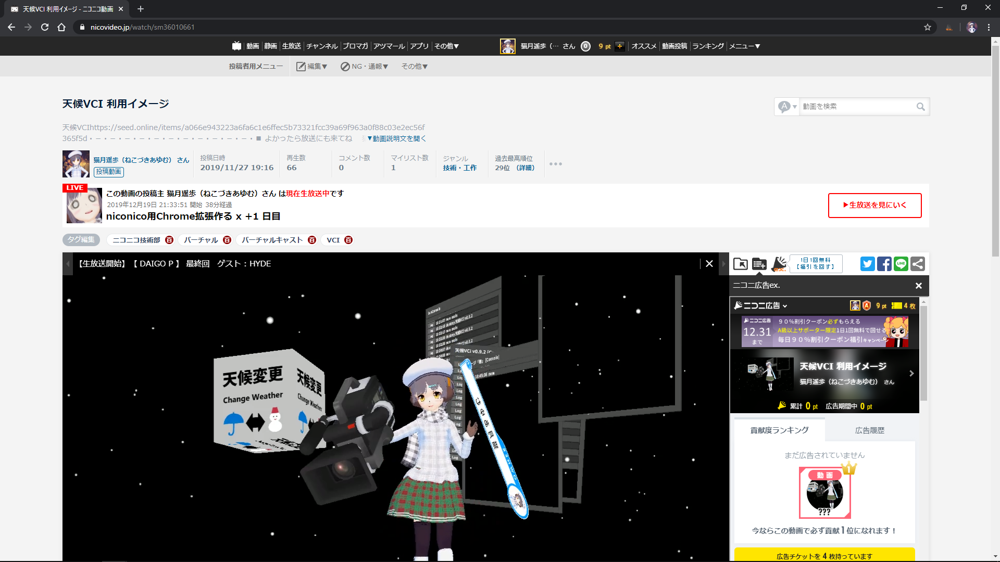
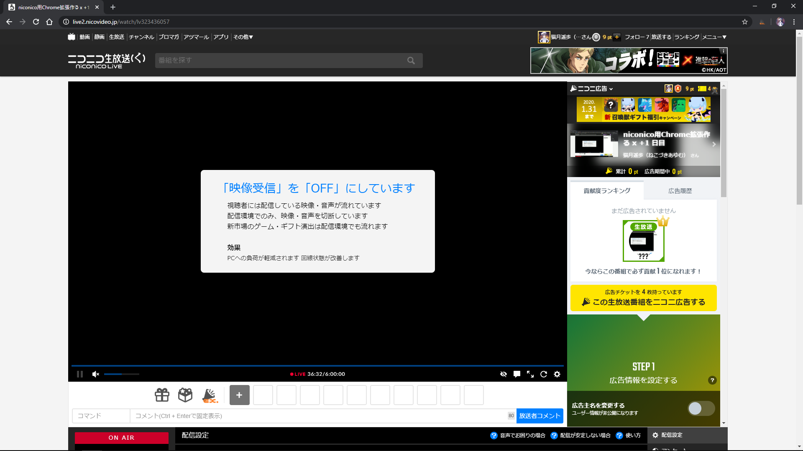

使い方
視聴ページを開き、アイコンに[ex.]がつくまで待ちます。(だいたい3秒)
ボタンをクリックすると、コメント欄に表示されます！
 FAQ
広告チケットを選んだあと、変更できない
現在のバグです。一度「チケットを利用しない」を選択したあと、選び直すと正常に利用できますのでお試しください。
広告の画面が狭すぎる
この拡張機能では、コメント欄に広告画面を表示させるので、コメント欄が小さいと広告画面も小さくなってしまいます。
動画・生放送プレイヤー設定より、画面サイズを「自動」に設定の上、再度お試しください。
生放送エラーメッセージについて
広告ができない番組、作成に失敗したときなど、左下にエラーメッセージが表示されます。
内容を確認し、これはおかしい！というときはご連絡ください。
急な動作不良につきまして
本拡張機能は、有志が制作したツールとなり、公式と何ら関わりはありません。
バグ等のご連絡は、niconico運営ではなく、こちらまでお願い致します。
また、公式による機能追加直後は動作しなくなる可能性もございます。
こちらの対応までしばらくお待ちいただけますようお願い致します。